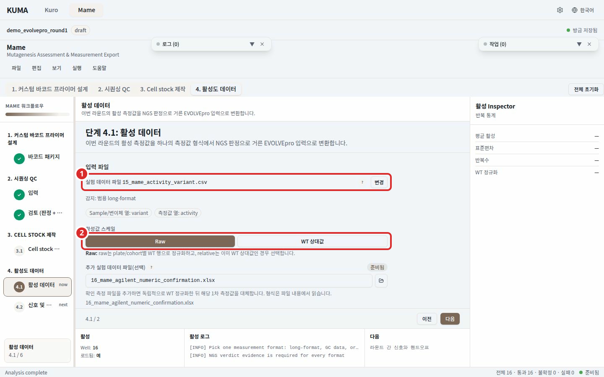
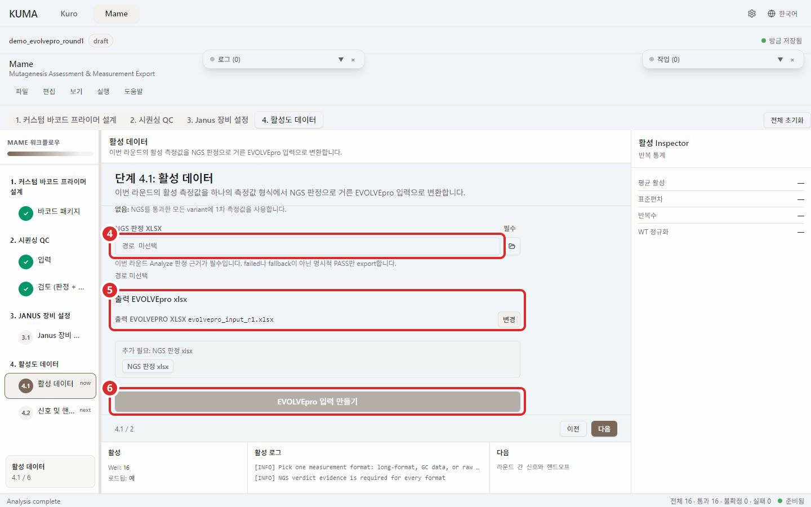
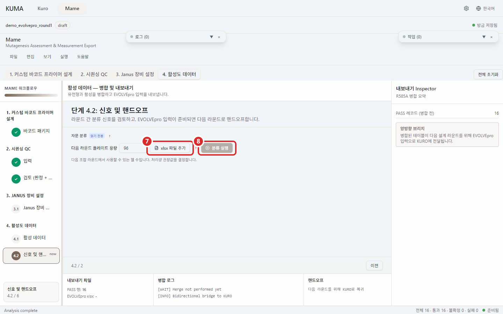

단계 4. 활성 데이터¶

번호 표시: 1 측정 파일; 2 활성값 스케일 (raw 또는 WT 상대값); 3 선택적 확인 측정

번호 표시: 4 NGS 판정 xlsx; 5 출력 EVOLVEpro xlsx; 6 EVOLVEpro 입력 만들기

번호 표시: 7 라운드별 EVOLVEpro 결과 xlsx (4.2); 8 분류 실행 (4.2)
이번 라운드의 활성 측정값을 같은 라운드의 NGS 판정으로 거른 뒤 WT 정규화와 replicate 병합을 거쳐 EVOLVEpro 입력 xlsx 를 만든다. 4.1 에서 파일을 만들고 4.2 에서 다음 라운드 방향을 본다.
4.1 EVOLVEpro 입력 형식으로 변환¶
- 측정 파일을 고른다. 형식은 파일 내용에서 읽으며 csv, xlsx, xls 를 받는다.
- 한 파일이 두 형식으로 모두 읽히면 어느 쪽인지 고른다. 화면이 두 형식의 차이를 알려 준다.
- 확인 측정이 있으면 선택적 확인 측정에 넣는다. 없으면 없음으로 둔다.
- NGS 판정 xlsx 를 고른다. 이번 라운드 Analyze 가 만든 판정이며 필수다.
- 출력 EVOLVEpro xlsx 경로를 고르고 EVOLVEpro 입력 형식으로 변환 를 누른다.
어느 형식을 골라도 뒤 과정은 같다. 정규화, replicate 병합, NGS 판정 적용, export 가 한 파이프라인이다.
측정값 형식¶
| 형식 | 라벨 | 값 | 추가로 필요한 것 |
|---|---|---|---|
| 범용 long-format | well 또는 variant | 활성값 스케일에서 raw 또는 WT 상대값을 고른다 | well 라벨이면 매핑 하나 |
| GC data 시트 | well | 이미 WT 상대값 | 매핑 하나 |
| Raw Agilent report | well | report 의 WT 블록 평균으로 정규화 | 매핑 하나 |
| 숫자 ID Agilent report | 플레이트 위치 번호 | report 의 WT 블록 평균으로 정규화 | 순서 소스 하나 |
well 라벨이 요구하는 것은 well 에서 variant 로 가는 매핑 하나다. Plate layout xlsx 를 주면 그 시트를 쓰고 주지 않으면 NGS 판정 시트가 웰마다 적어 둔 변이체 이름을 쓴다. 한 variant 가 두 well 에 앉으면 거절한다. NGS 근거를 붙일 well 이 하나로 정해지지 않기 때문이다.
숫자 ID 는 번호 i 가 플레이트 순서의 i 번째 변이체다. 순서 소스는 설계 변이 목록이 우선이고 없으면 plate layout 을 쓴다. ID 집합이 그 순서와 일대일로 맞지 않으면 이웃 변이체에 값을 붙이는 대신 거절한다.
범용 long-format 파일 요건¶
- 라벨 열은 정확히 하나, 값 열도 정확히 하나여야 한다.
- 한 파일에 well 라벨과 variant 라벨을 섞지 않는다.
- raw 값에는 음수, NaN, 무한대를 넣지 않는다.
- raw 를 고르면
plate_id별 WT 행 평균이 분모가 된다.plate_id열이 없으면 파일 전체가 한 cohort 다. - WT 상대값을 고르면 다시 정규화하지 않는다.
확인 측정¶
둘 중 최대 하나만 준다. 확인 측정 평균은 같은 변이체의 1차 측정값을 대체한다.
- Variant 라벨 Agilent report: sample name 이 변이체 이름인 report 만 받는다.
- 숫자 ID 반복 측정 report: 번호는 플레이트 전체가 아니라 1차 스크리닝에서 WT 를 넘은 부분집합을 센다. 순서 소스는 설계 변이 목록과 plate layout 중 정확히 하나여야 하며 둘 다 주면 거절한다.
활성 순위나 이전 EVOLVEpro 파일로 변이체 이름을 추론하는 옛 방식은 지원하지 않는다. 저장된 상태가 그 방식을 가리키면 실행하지 않고 변환 안내를 표시한다.
NGS 판정이 무엇을 거르는가¶
변이체가 export 되려면 세 가지가 모두 맞아야 한다. 판정이 명시적 Pass 다. 실패나 대체 반복 표시가 없다. 중복 행 사이에 판정이나 변이체 이름 충돌이 없다. 판정 누락, 충돌, Pass 가 아닌 행은 통과로 추정하지 않고 뺀다. 통과한 변이체가 하나도 없으면 빈 파일을 성공으로 발행하지 않고 실패시킨다.
결과 읽기¶
생성 결과에 저장된 variant, 확인 측정 대체, 1차 측정값, NGS 제외 개수가 나온다. 출력 파일은 Variant 와 activity 두 열만 가진다.
확인 측정 평균이 1차 값과 크게 다르면 불일치로 표시하고 내보내기를 막는다. 레이아웃과 판정 라벨을 확인한 뒤 검토한 라벨 불일치 허용 으로 푼다. 다른 라운드가 이미 산출물로 기록한 파일을 출력 경로로 고르면 덮어쓴다고 알려 준다.
측정 입력, 판정 근거, 출력 경로 중 하나가 바뀌면 이전 완료 표시가 무효가 되어 다시 만들어야 한다.
4.2 신호 및 핸드오프¶
라운드별 EVOLVEpro 결과 xlsx 를 모아 자문 분류를 돌린다. 4.1 이 만든 산출물로 목록이 자동으로 채워지며 항목을 더하거나 뺄 수 있다. 분류 실행 을 누르면 단일 변이 계속, Combinatorial 전환, 중단, 보류 중 하나를 근거와 함께 답한다. 읽기 전용 자문이라 아무것도 확정하거나 저장하지 않는다.
→ MAME 파이프라인 에 각 단계가 무엇을 계산하는지 정리돼 있다.
→ MAME 개요